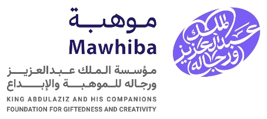
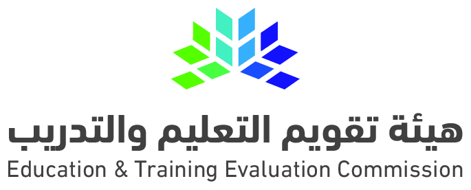

مخصص لمسؤول الدعم • العام السابع عشر
دليل مسؤول الدعم لترشيح الطلبة ومتابعة الترشيحات
دليل توضيحي • تنفيذ الترشيح يتم عبر لوحة التحكم الرسمية


دليل مسؤول الدعم
مراحل ترشيح الطلبة والمتابعة
الخطوات العشر مع صورها، مرتبة في ثلاث مراحل. جميع الخطوات ظاهرة ويمكن إخفاؤها أو إظهارها.